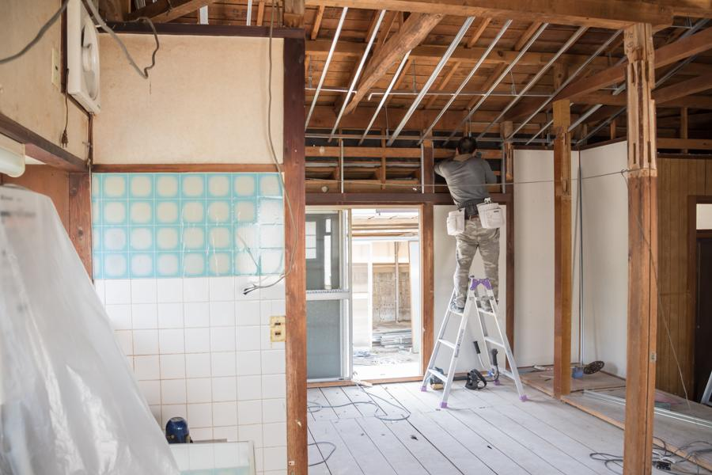

ホーム › リフォーム
リフォーム
場所別の費用目安
「リフォームはいくらか分からない」が一番の不安だと思います。先に目安を出しておきます。
| 場所 | よくある工事の内容 | 費用の目安 | 工期の目安 |
|---|---|---|---|
| 浴室 | タイル風呂からユニットバスへの交換、断熱 | 80〜150万円 | 4〜7日 |
| キッチン | キッチンの入れ替え、対面化、床の張り替え | 60〜150万円 | 3〜6日 |
| トイレ | 便器の交換、内装、手すりの取り付け | 20〜50万円 | 1〜2日 |
| 洗面・脱衣室 | 洗面台の交換、床の張り替え | 15〜40万円 | 1〜3日 |
| 外壁・屋根 | 塗装(足場をかけて外壁・屋根を同時に) | 90〜160万円 | 10〜16日 |
| 小さな工事 | 蛇口・網戸・建具の調整・手すり1本 | 数千円〜 | 当日〜半日 |
※ 建物の状態・選ぶ設備のグレードで変わります。
現地を拝見したうえで、
内訳つきのお見積もりをお出しします。
解体してみて追加が出そうなときは、
必ず先にご相談します 勝手に工事を進めて、
あとから
請求に載せることはしません。
必ず先にご相談します 勝手に工事を進めて、
あとから
請求に載せることはしません。
工事までの流れ
ご相談からお引き渡しまで、
追加費用が出る場面を先にお伝えしながら進めます。

解体してみて初めて分かることがあります。
そのときは必ず、
先にご相談します。
ご相談(無料)
電話かフォームで。
「まだ直すか決めていない」段階で大丈夫です。現地の確認とお見積もり(無料)
現地を拝見して、
内訳つきの見積書をお渡しします。
その場での即決は求めません。ご契約・日程の調整
他社さんと比べてからで
構いません。
工事中の生活(お風呂・トイレの使えない期間)もここでご説明します。工事
毎日、
その日の作業と翌日の予定を
お伝えして帰ります。お引き渡しとアフター
仕上がりを一緒に確認します。
引き渡し後の不具合は、
まずお電話ください。
地元なのですぐ伺えます。